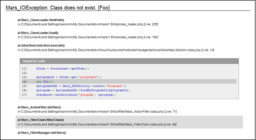

戻る
最終更新日: 2010 年5 月 7 日
例外ハンドラの概要
フレームワークやアプリケーションから発生した全ての例外は、Delta_ExceptionHandler にハンドリングされます。Delta_ExceptionHandler はアプリケーションのデバッグ (application.yml の "debug:output" 属性) な有効な場合、例外内容に応じた問題箇所のトレースを出力します。
ここでの例外は、Fatal ではない PHP エラーも含みます。PHP エラーは Delta_ErrorHandler にハンドリングされた後、ErrorException オブジェクトに変換されます。例外オブジェクト変換後は ErrorException::getSeverity() メソッドを通してエラーレベルを取得することが可能です。尚、アプリケーションのデバッグモードが無効の場合は、画面上に例外の内容や詳細は表示せず、問題が発生したことを指すメッセージのみ表示されます。
ハンドラは例外発生時に問題を解決するための手助けをしますが、実運用となると例外が起きたことをメールで通知したり、システム利用者により分かりやすいメッセージを表示する必要が出てくるでしょう。このような場合、ハンドラをインターセプト (横取り) して独自の拡張を実装することが可能です。
拡張例外ハンドラの一例 (Delta_ExceptionLoggingDelegate)
プロジェクトを作成した段階では、例外が起きた際にエラー内容をロギングするためのインターセプトハンドラが登録されています。アプリケーションディレクトリに含まれる application.yml を確認してみましょう。デフォルトでは次のような記述があります。
- YAML Code# config/application.yml
exception:
- type: Exception
handler: Delta_ExceptionLoggingDelegate
duration: TRUE
- type: Exception
handler: Delta_ExceptionStackTraceDelegate
これは、Delta_ExceptionHandler がハンドリングした全ての例外を Delta_ExceptionLoggingDelegate、Delta_ExceptionStackTraceDelegate の順にインターセプトするという記述です。Delta_ExceptionLoggingDelegate はその名の通り、受け取った例外をファイルやメール通知でロギングします。ロギング先は application.yml に定義されたロガーの設定により異なりますが、プロジェクト作成直後の設定は次のようになっています。
- YAML Code# config/application.yml
logger:
errorFileAppender:
class: Delta_LoggerFileAppender # ファイルにロギング
file: error.log # ログを保存するファイル名
rotate: # ログファイルのローテート方法
type: date # 日付によるローテート
datePattern: Y-m
もしロギングする内容を拡張したいのであれば、Delta_ExceptionLoggingDelegate を継承したクラスを作成し、設定ファイル上の "handler" 属性を新しいクラス名に書き換えることで設定が有効になります。
更に Delta_ExceptionLoggingDelegate には duration という属性がありますが、この値を TRUE に設定することで、例外のハンドリング処理を続行することができます。FALSE を指定した場合は、Delta_ExceptionLoggingDelegate の処理が完了した時点でプログラムが終了します。
後に続く Delta_ExceptionStackTraceDelegate は、発生した例外を元にスタックトレースを出力します。(下図参照)

Delta_ExceptionStackTraceDelegate は、セキュリティ上の観点からデバッグ出力モードが有効時のみトレース情報を出力します。デバッグ出力を有効にするには、application.yml の debag.output 属性の値を TRUE に設定して下さい。
拡張例外ハンドラの作成
PDO から発生した例外をインターセプトするハンドラを作成してみましょう。
まず初めに例外ハンドラクラスを作成します。クラス名は何でも良いのですが、ここでは慣例的に "PDOExceptionHandler" としました。
- PHP Code# libs/handler/PDOExceptionHandler.php
class PDOExceptionHandler extends Delta_ExceptionDelegate
{
public static function handler($exception)
{
// ロギング
Delta_ExceptionLoggingDelegate::handler($exception);
// エラーアクションへの遷移
$controller = Delta_DIContainerFactory::getContainer()->getComponent('controller');
$controller->forward('Error');
// 例外トレースの出力も可能
// Delta_ExceptionHandler::printStackTrace($exception);
}
}
PDOExceptionHandler がインタフェースを実装している点に注目して下さい。インターセプトハンドラは、必ず Delta_ExceptionDelegate 抽象クラスを実装する必要があります。当然ながら、Delta_ExceptionLoggingDelegate クラスもこのインタフェースを実装しています。
static な handler() メソッドは、例外がインターセプトされた直後に呼び出されます。ここでは Delta_ExceptionLoggingDelegate::handler() を呼び出してロギングを行った後、エラー画面へフォワードをかけています。
また最後の行では printStackTrace() メソッドを呼び出していますが、このメソッドを実行することで、従来のハンドラが出力していた例外トレースを画面に出力することが可能です。(printStackTrace() メソッドは、デフォルトで出力バッファをクリアした後にトレースを出力します。これはオプション引数で動作を変更可能です)
クラスの作成が終わったら、設定ファイルにインターセプトハンドラの定義を追加しましょう。
- YAML Code# config/application.yml
exception:
- type: PDOException
handler: PDOExceptionHandler
以上で設定は完了です。
例外ハンドラはアクションやフィルタが起動するよりも前に登録されるため、フレームワークの内部で発生した例外もインターセプトすることが可能になります。
設定ファイルの高度な設定
ハンドラを複数登録する
"exception" には複数のハンドラを登録することができます。
- YAML Code# config/application.yml
exception:
# CustomException はプロジェクト内で作成した独自の例外クラス
- type: CustomException
handler: CustomExceptionHandler
# その他全ての例外をハンドリング
- type: Exception
handler: Delta_ExceptionLoggingDelegate
アプリケーション内部で CustomException がスローされた場合は CustomExceptionHandler が起動しますが、ハンドラを定義する順番には注意が必要です。
Delta_ExceptionHandler は、発生した例外とマッチする "type"、もしくは親例外クラスがあるかどうか、上から順に検索します。
仮に "type: Exception" が上位に設定されていた場合、CustomException は Exception の子クラスのため、Delta_ExceptionLoggingDelegate が起動することになります。
- YAML Code# config/application.yml
exception:
# その他全ての例外をハンドリング (CustomException も該当)
- type: Exception
handler: Delta_ExceptionLoggingDelegate
# 実行されない
- type: CustomException
handler: CustomExceptionHandler
"type" にはカンマ区切りで複数の例外を定義することも可能です。
- YAML Code# config/application.yml
exception:
# CustomException、または Exception が発生した場合は Delta_ExceptionLoggingDelegate を起動
- type: CustomException, Exception
handler: Delta_ExceptionLoggingDelegate
ハンドリングの継続 (duration 属性)
定義されているハンドラに例外がマッチすればそこで処理は終了しますが、場合によってはハンドリングを続けたい場合もあります。
こういった場合は、"duration" 属性 (ハンドリング後も処理を続けるかどうか) を追加して下さい。
- YAML Code# config/application.yml
exception:
- type: Exception
handler: Delta_ExceptionLoggingDelegate
duration: TRUE
- type: CustomException
handler: CustomExceptionHandler
"duration" 属性が有効な場合、Delta_ExceptionLoggingDelegate::handler() の処理が終了した後も、(例外にマッチすれば) CustomExceptionHandler::handler() が続けて呼び出されます。